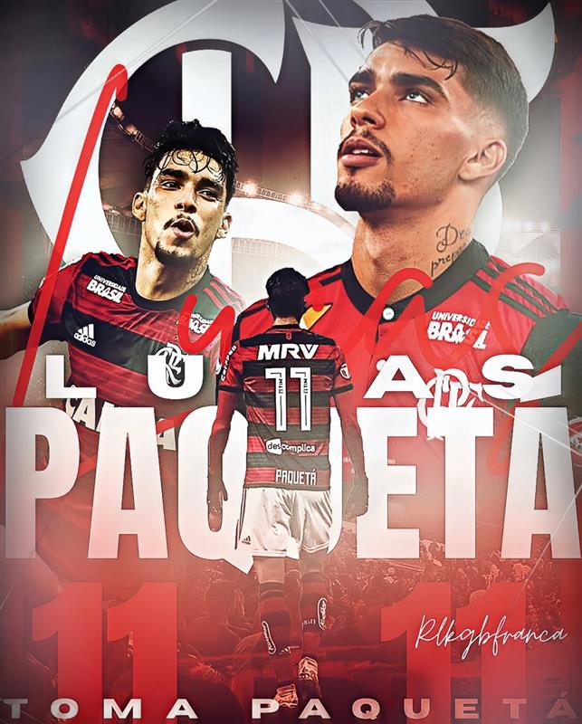
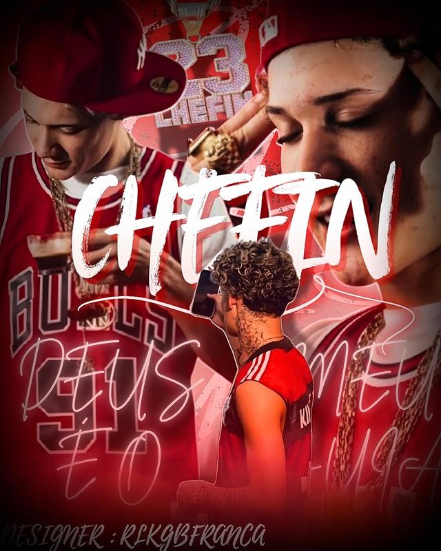
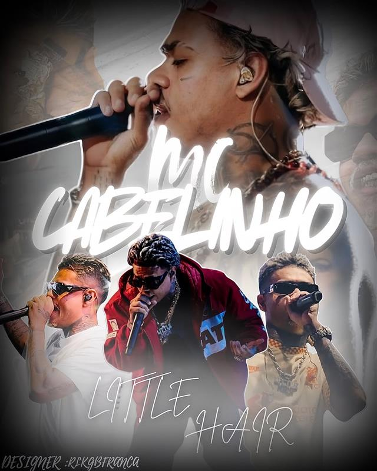
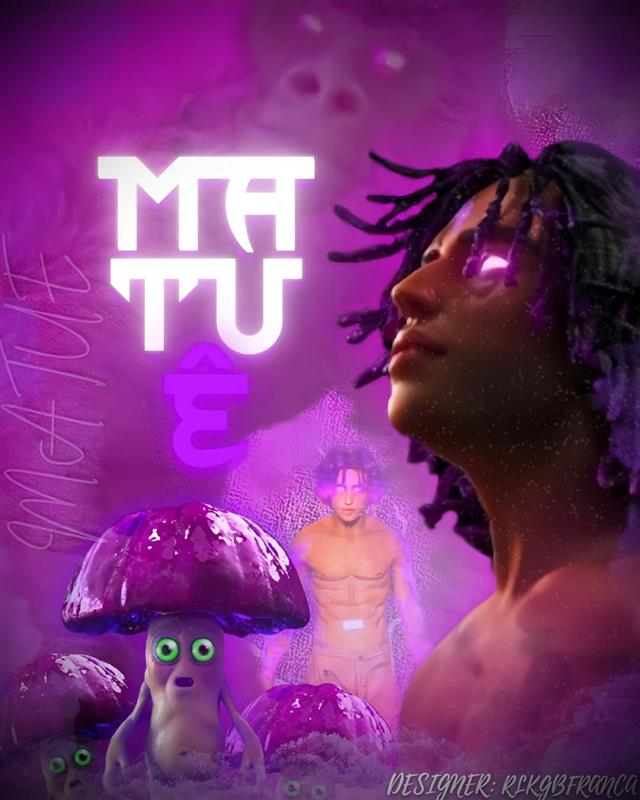
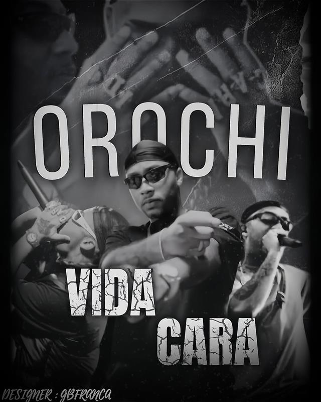
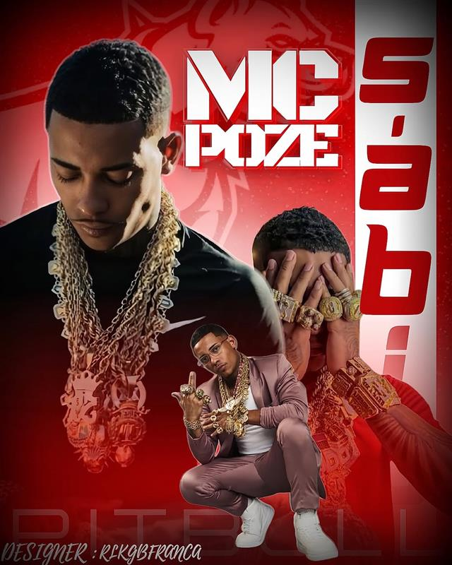

Sobre Mim
Olá, me chamo Pedro Gabriel, sou designer gráfico e trabalho com criação de artes e edição de vídeos.
Estou fazendo curso de informática e pretendo evoluir na área.

Crio identidades visuais, flyers e conteúdos digitais com foco e criatividade.
Olá, me chamo Pedro Gabriel, sou designer gráfico e trabalho com criação de artes e edição de vídeos.
Estou fazendo curso de informática e pretendo evoluir na área.
Tenho interesse em design, edição de vídeos e criação de conteúdo digital.
Meu objetivo é crescer na área de design e trabalhar com criação visual.

Este projeto consiste na criação de um flyer moderno e impactante destacando o jogador do flamengo Paquetá, ídolo revelado pelo Flamengo.

Este projeto na criação de um flyer destaca o cantor Chefinho, uma das promessas em ascenção do cenário musical, o flyer da a ideia de uma identidade visual do artista.

Este projeto consiste na criação de um flyer moderno e impactante destacando o mc cabelinho um dos principais nomes do cenario atual.

Este projeto consiste na criação de um flyer impactante destacando o albúm da música do trapstar Matuê, a música se chama Gorila Roxo, a mais ouvida no brasil e do albúm.

Este projeto consiste na criação de um flyer com uma estética dark, destacando o cantor Orochi, a arte utiliza uma paleta de cores escuras e filtros cinzentos para transmitir uma intensidade, estilo urbano e moderno.

Este projeto consiste na criação de um flyer com uma vibe mais moderna, destacando o cantor Mc Poze, um dos grandes nomes e principais do cenário do funk/trap atualmente.
pedrogabriel22@email.com
Telefone: 22992693763
Instagram: @gbdesigner_